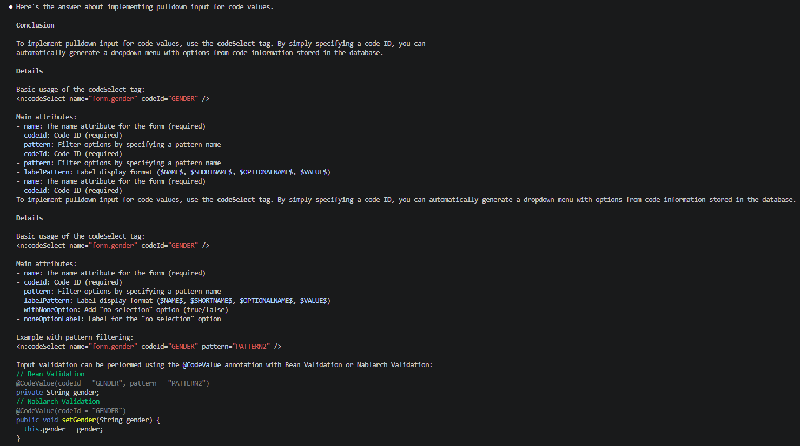
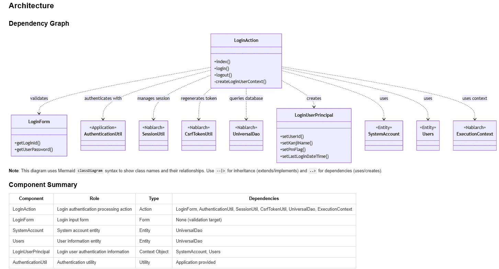
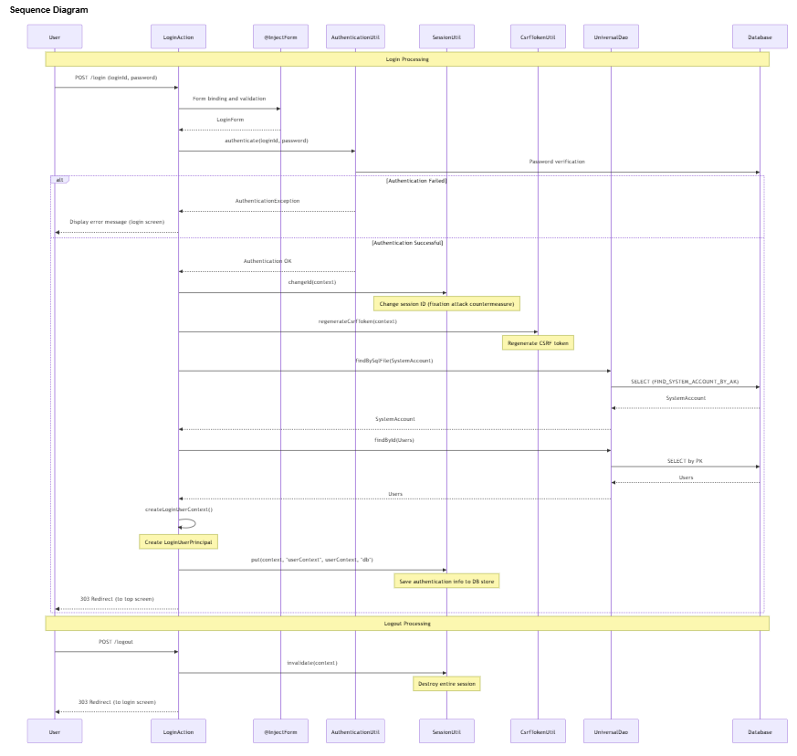

Nablarch-specific AI Coding Tool Plugin¶
Table of Contents
Prerequisites¶
This plugin requires Claude Code(External site) or GitHub Copilot(External site).
What is the Nablarch-specific AI Coding Tool Plugin¶
The Nablarch-specific AI Coding Tool Plugin is an AI assistant equipped with knowledge from the official Nablarch documentation, system development guides, and sample projects. It operates as a plugin for Claude Code or GitHub Copilot, providing accurate answers to Nablarch-specific specifications and conventions.
Background¶
In recent years, generative AI has rapidly become part of everyday development, and developers routinely rely on it. However, Nablarch information is scattered across multiple sources on the web, requiring a broad understanding across sources. Therefore, generative AI cannot accurately answer Nablarch-specific specifications and conventions.
Common Challenges in Development¶
Have you experienced these challenges in Nablarch development?
- “Which documentation contained that configuration?”
- “Looking up API usage requires going back and forth through multiple official documentation pages...”
- “When I ask AI, it suggests non-existent methods, causing more confusion”
- “Explaining Nablarch to team members takes time away from design work”
How This Plugin Helps¶
By introducing this plugin, you can simply type /n6 in Claude Code or GitHub Copilot Chat and ask questions to get immediate, evidence-based answers about Nablarch specifications and conventions from AI.
Features¶
Knowledge Search¶
Answers questions based on Nablarch documentation.
Usage example:
/n6 How do I implement a pull-down input for code values?
Searches related sections across Nablarch documentation and returns answers including code examples and configuration examples.
Answer Example


How it works:
- Converts official Nablarch documentation to AI-readable JSON format
- Ensures accuracy through two-stage process: keyword full-text search + AI-based relevance determination
- Fallback mechanism where AI selects files from the table of contents when full-text search finds no hits
Code Analysis¶
Analyzes application code within the project from a Nablarch perspective and documents the overall picture.
Usage example:
/n6 code-analysis
Visualizes the following information:
- Class dependencies
- Handler queue configuration
- Processing flow visualized in Mermaid diagrams
Output Example
Class dependency diagram and component summary:


Processing flow diagram (sequence diagram):


Along with the diagrams above, detailed documentation is generated including the role of each component, how to use Nablarch framework features, and implementation points.
Main use case: Quick understanding of the overall picture when new members join the project.
Reliability¶
- Answers Based Only on Official Documentation
- Knowledge files are created through rule-based transformation of official Nablarch documentation. AI does not introduce external information through web search or speculation; answer sources are always limited to official information.
- Clearly States When Information Is Unavailable
- For questions without information in the knowledge files, explicitly states “Not included in knowledge files.” Never returns incorrect answers through plausible speculation.
- Always Provides Section-Level References in Answers
All answers clearly indicate their sources, allowing immediate verification of AI answer accuracy.
- Reference Presentation Structure
- Line 1: Page title (e.g., HTTP Error Control Handler, etc.)
- Line 2: File path (.md knowledge file)
- Line 3: Title of each cited section
Supported Versions¶
This plugin supports the following Nablarch versions.
| Supported Version | Plugin |
|---|---|
| Nablarch 6u3 | nabledge-6(External site) |
| Nablarch 5u26 | nabledge-5(External site) |
| Nablarch 1.4.11 | nabledge-1.4(External site) |
| Nablarch 1.3.7 | nabledge-1.3(External site) |
| Nablarch 1.2.8 | nabledge-1.2(External site) |
Installation¶
This plugin is freely available as OSS on GitHub. It can be easily installed by executing a single command in the terminal.
For Nablarch 6¶
Execute the following command in the terminal:
curl -sSL https://raw.githubusercontent.com/nablarch/nabledge/main/setup-cc.sh | bash -s -- -v 6
or:
curl -sSL https://raw.githubusercontent.com/nablarch/nabledge/main/setup-ghc.sh | bash -s -- -v 6
This will make the /n6 command available.
For Other Versions¶
Click the link in the Plugin column for your Nablarch version to view the setup procedure.